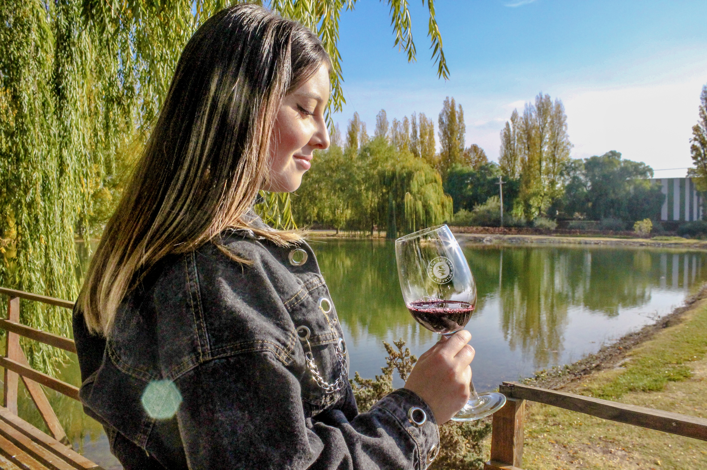
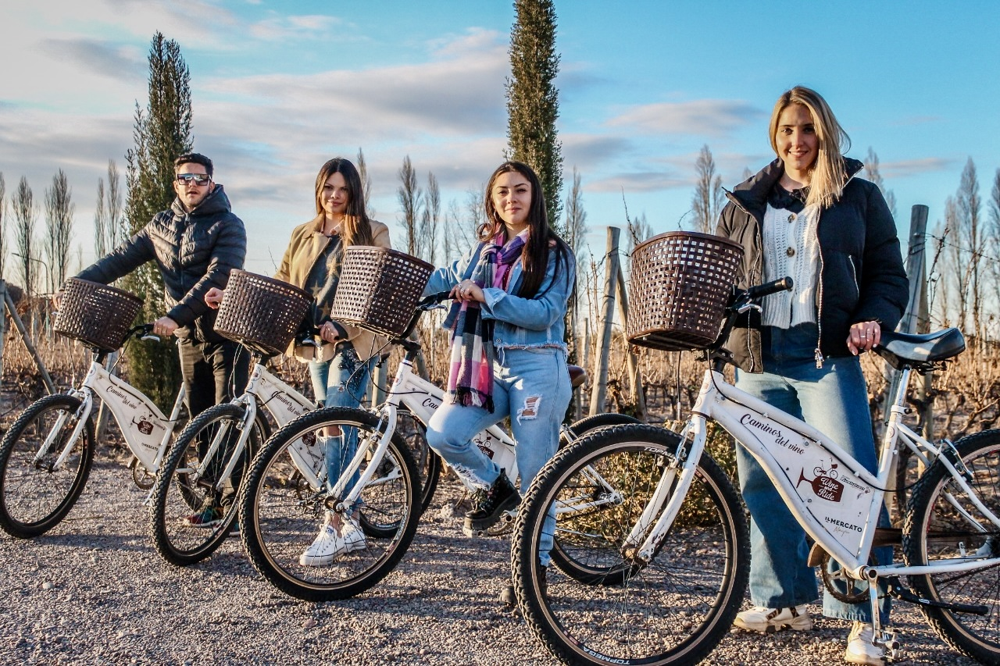
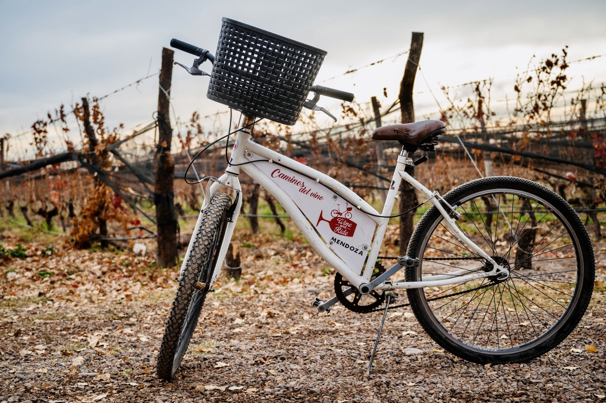
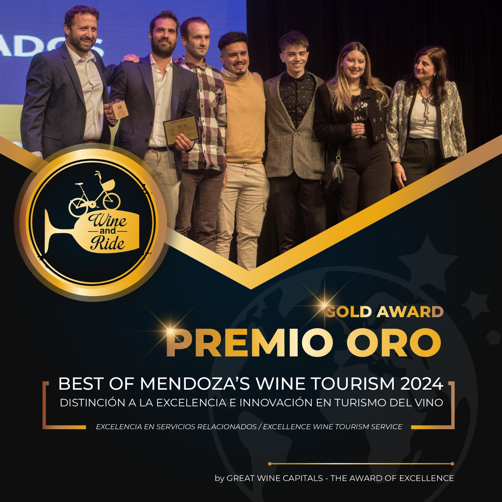

CAMINOS DEL VINO EN BICICLETA
Recorré la ruta del vino y conocé las mejores bodegas, viñedos, olivícolas, paisajes y lugares. Degustá exquisitos vinos y la mejor gastronomía.
Descubrí los sabores más auténticos de Mendoza. Te invitamos a disfrutar de recorridos que combinan el encanto de bodegas familiares con la grandeza de bodegas reconocidas a nivel mundial. Además, podrás vitar las mejores olivícolas y vivir una experiencia única en los caminos del vino y el olivo. Relajate y dejá que nosotros nos encarguemos de todo, para que vos solo te dediques a disfrutar.
Reservá tu experiencia ahora
En Wine and Ride nos encargamos de cada detalle para que disfrutes a tu propio ritmo. Te ofrecemos la bicicleta con seguro, casco, mapas de papel y digital, y una explicación clara del recorrido. Asistencia mecánica y médica, reservas y todo los servicios que necesitas para solo tengas que disfrutar sin preocupaciones.
Reservá tu experiencia ahora
Pedaleá entre viñedos, disfrutá de la tranquilidad de la naturaleza y maravillate con las montañas como telón de fondo. Cada kilómetro es una invitación a descubrir sabores, aromas y la cultura vitivinícola que hace de Mendoza un destino incomparable.
Reservá tu experiencia ahora
Wine and Ride es mucho más que una actividad turística: es una experiencia auténtica, libre y amigable con el medio ambiente. Te invitamos a descubrir los caminos del vino y del olivo de una manera única, montado en una bici, conectado con la tierra y sus protagonistas.
Acá no hay micros ni ventanas: hay viento en la cara, ritmo propio y contacto real. Podés llegar en bicicleta a un viñedo y cosechar junto a los trabajadores, o ver al dueño de una bodega familiar llenar las barricas mientras degustás un vino y sacás una foto de ese momento irrepetible.
La bici te lleva de un lugar a otro, conectándote con bodegas, olivícolas y paisajes que despiertan los sentidos...
Wine and Ride ha sido reconocido a nivel internacional por su compromiso con la calidad, la innovación y la experiencia del visitante en el ámbito del enoturismo. A lo largo de los años, ha sido distinguido por el prestigioso programa Best Of Wine Tourism, que premia a las mejores experiencias turísticas vinculadas al mundo del vino.
Cada reconocimiento es el reflejo del esfuerzo por brindar experiencias únicas, sostenibles y memorables en los caminos del vino y del olivo mendocinos.

¿Querés reservar tu próxima aventura en bicicleta? Escribinos a wineandride@gmail.com o chateá directo por WhatsApp. También podés llamarnos a cualquiera de nuestras bases.
+54 9 261 769 1377 (Ambas bases)
Dirección:
OZAMIS 611 Norte, Gutierrez, Maipú, Mendoza. A 20 minutos del centro.
Horario: 10:00hs a 19:00hs
Dirección:
Bodega Vinorum, Luján de Cuyo, Mendoza.
Horario: 10:00hs a 17:00hs